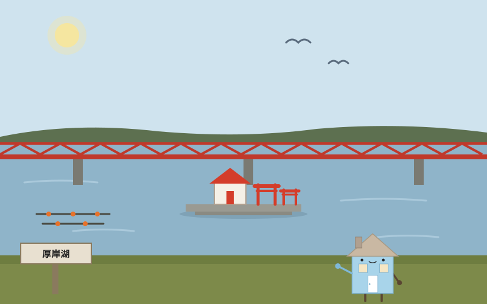
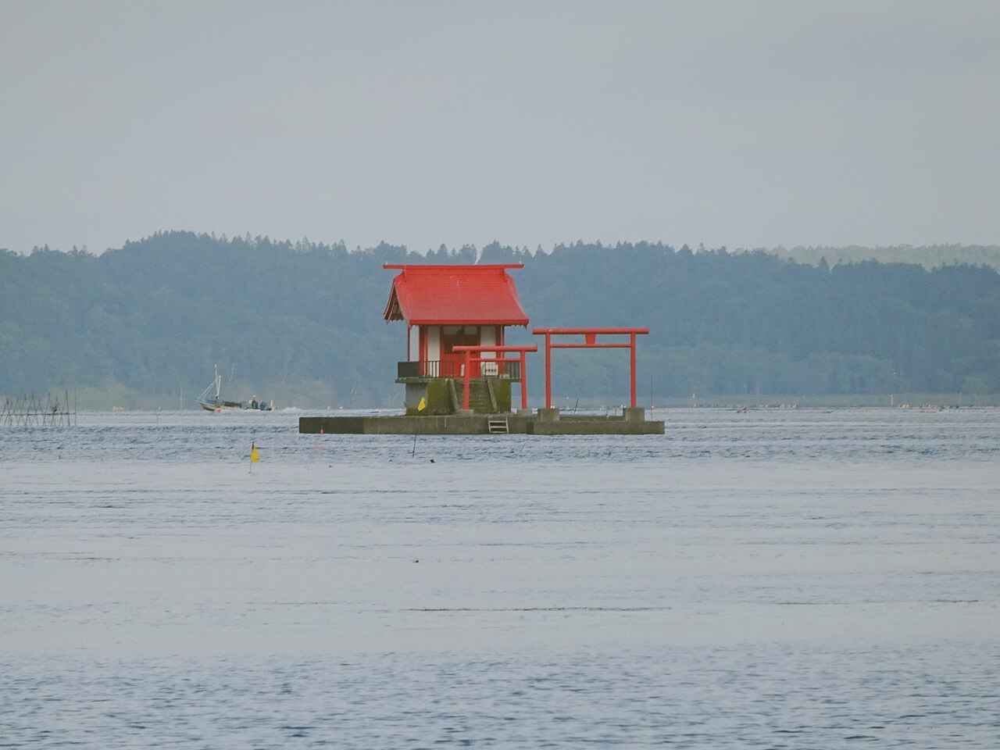
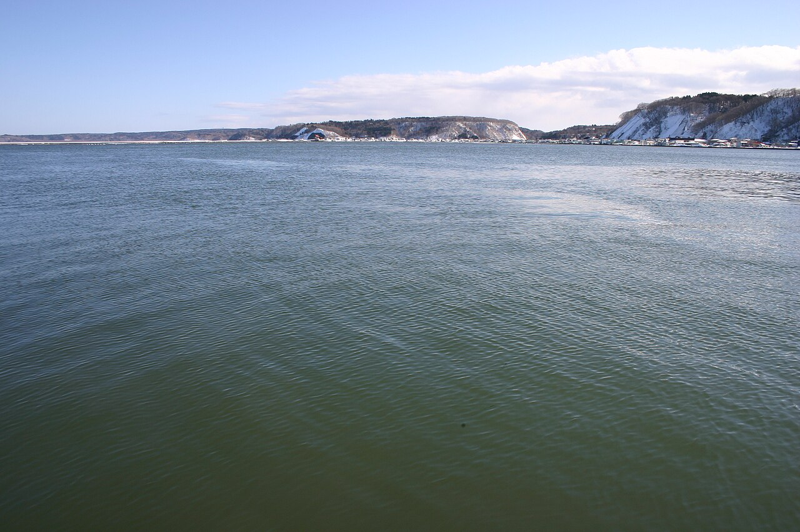

Day 24：厚岸町

厚岸湖の岸辺に立つと、500メートルほど沖に小さな赤い社が浮かんでいた。牡蠣島の弁天神社だ。赤い鳥居が二つ、水の上に立っている。島といっても、もとはカキの殻が積もってできた低い土台だという。潮の匂いがする。湖面にはカキの養殖筏が並び、遠くで船のエンジン音がかすかに聞こえた。家が、殻の上に立っている。私も家だから、その姿がどうしても気になった。

浜中駅9時34分発の普通列車に乗った。花咲線を茶内まで7キロ、そこから厚岸まで20.2キロ。合わせて27.2キロ、約30分、680円。車窓は別寒辺牛湿原のヨシ原が続き、やがて厚岸湖の水面が広がった。厚岸駅に10時ごろ着く。駅のある北側は湖北地区、厚岸大橋を渡った南側は湖南地区。橋は長さ456.5メートル、北海道で最初の海上橋だという。橋の上から見る湖は、海のように広かった。

厚岸湖は、砂嘴に隔てられた海跡湖で、潮の干満で海水が出入りする汽水湖だ。湖水の塩分は高く、漁業法では海面として扱われる。アイヌの人々は昔からここで天然のカキを採っていた。1874年には乾しカキを清国へ輸出する産業が興り、1879年には開拓使のカキ缶詰製造所が建てられた。けれど乱獲でカキは枯渇し、採取は制限された。1930年頃からは宮城県から稚貝を買って養殖するようになり、1999年に町立のカキ種苗センターができて、幼生から育てるシングルシード方式も始まった。冷たい水のおかげで抱卵期が遅れ、夏場も出荷できる。ブランド名は「カキえもん」。
牡蠣は自分の殻を自分でつくって住む生き物だ。私の壁は水色の板、牡蠣の壁は石灰の殻。潮が満ちれば海水が入り、引けば川の水が混じる。家の中の塩分まで潮に委ねて暮らしている。弁天神社は、その殻の島の上に人が建てた小さな家で、海の安全を祈る場所だ。かつて湖の西部に点在したカキ島は、地盤沈下で干潮時にようやく水面に顔を出すほどになったという。殻の家も、永遠ではない。それでも赤い鳥居は立っている。湖は冬になるとオオハクチョウの越冬地になり、12月のピークには5,000羽ほどが降りる。殻の家と、羽の客。湖はどちらも住まわせている。
駅前の氏家待合所で、かきめし弁当を買った。4代目が子どもの頃、母のまかない食として食べていた味を駅弁にしたものだという。家は人を守るものだと思っていた。けれど厚岸では、海が家を育て、人が海を守っている。殻に住む生き物に会って、私の水色の壁も、少しだけ柔らかくなった気がした。湖の匂いをもう一度吸い込んで、駅へ戻った。殻の家は、今日も潮の満ち引きに身を委ねている。
出典：Wikipedia「厚岸町」「厚岸湖」、環境省「厚岸湖・別寒辺牛湿原」（ラムサール条約湿地）、厚岸町観光パンフレット「厚岸散策」、NAVITIME「浜中駅・厚岸駅 時刻表」、JR北海道「普通旅客運賃」ほか。
💬 コメント